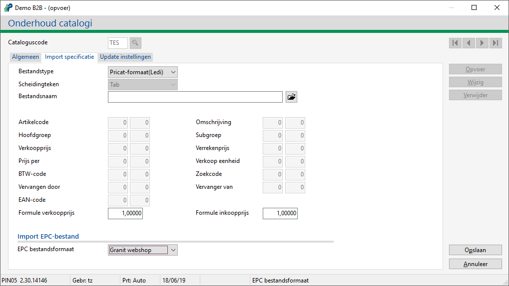

Om dit te doen, doorloopt u de volgende stappen:
-
Ga naar Onderhoud catalogi (AGT).
-
Kies voor de knop Toevoegen.
-
Geef bij Cataloguscode <
TES> op.-
Met omschrijving <
Test tbv inlezen artikelen>.
-
-
Ga naar tabblad Import specificatie.
-
Bij EPC bestandformaat selecteer bijv. Granit webshop.

-
Kies voor de knop Opslaan.
De gegevens zijn opgeslagen.